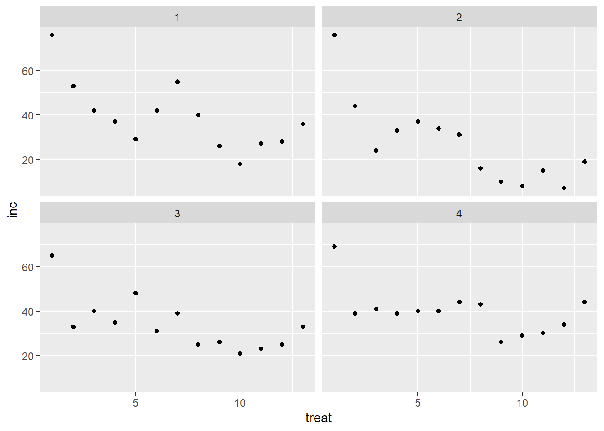
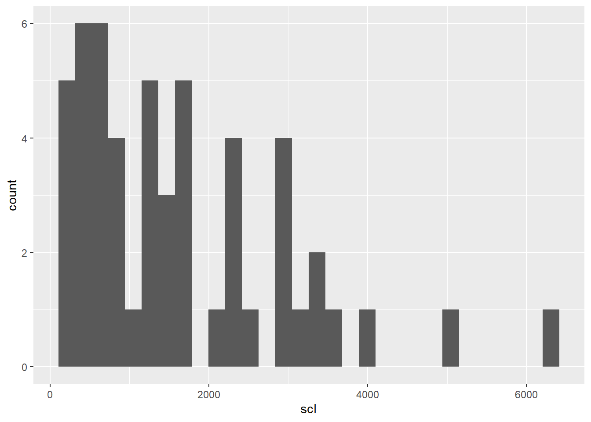
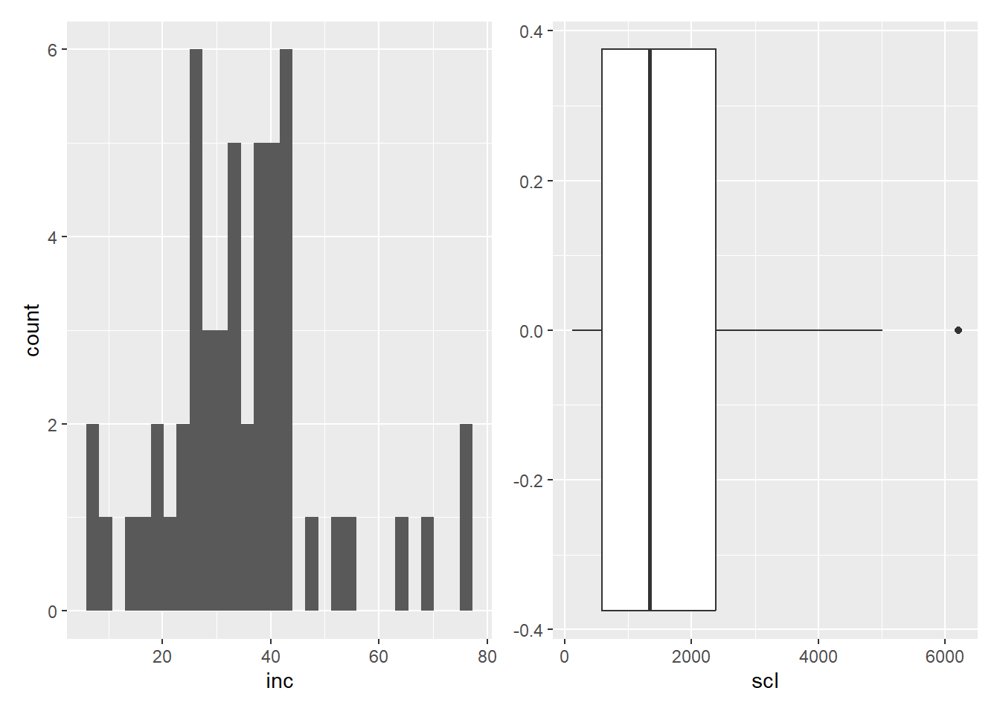
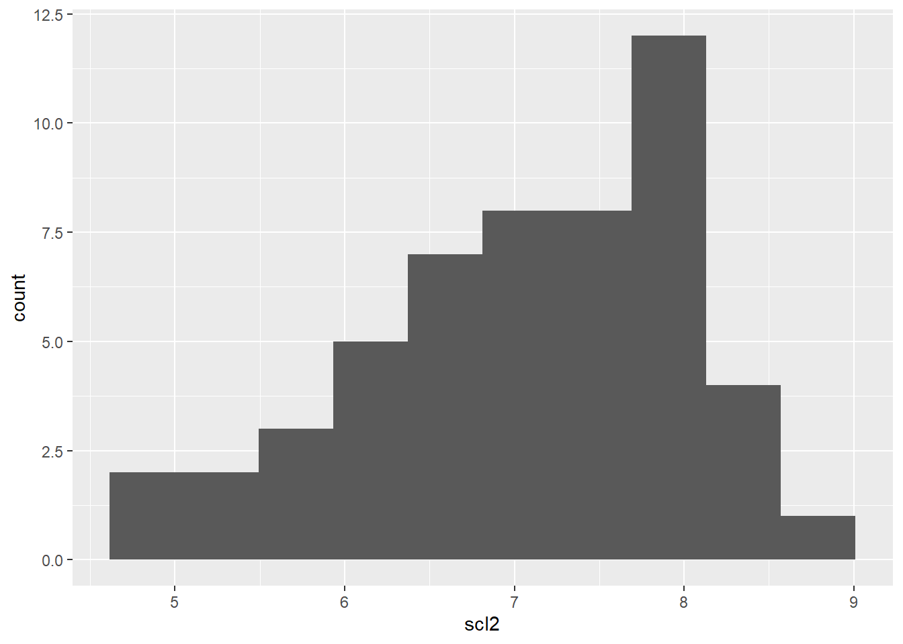
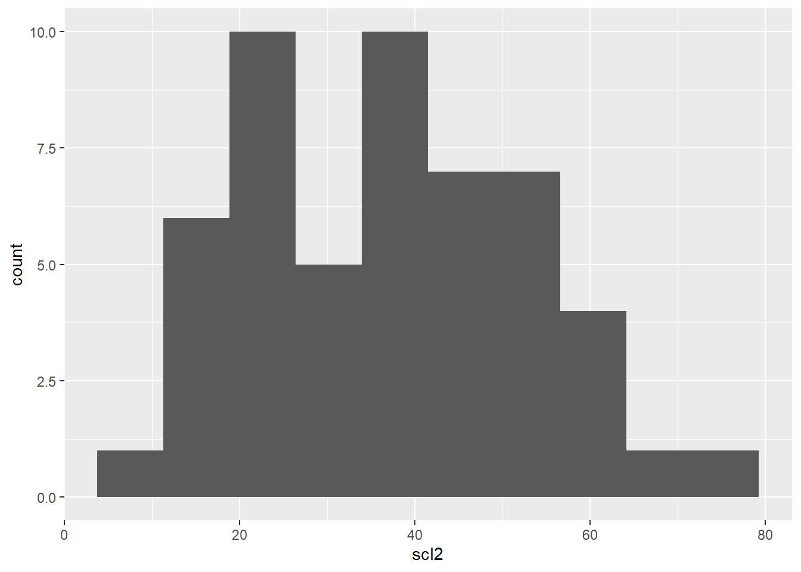
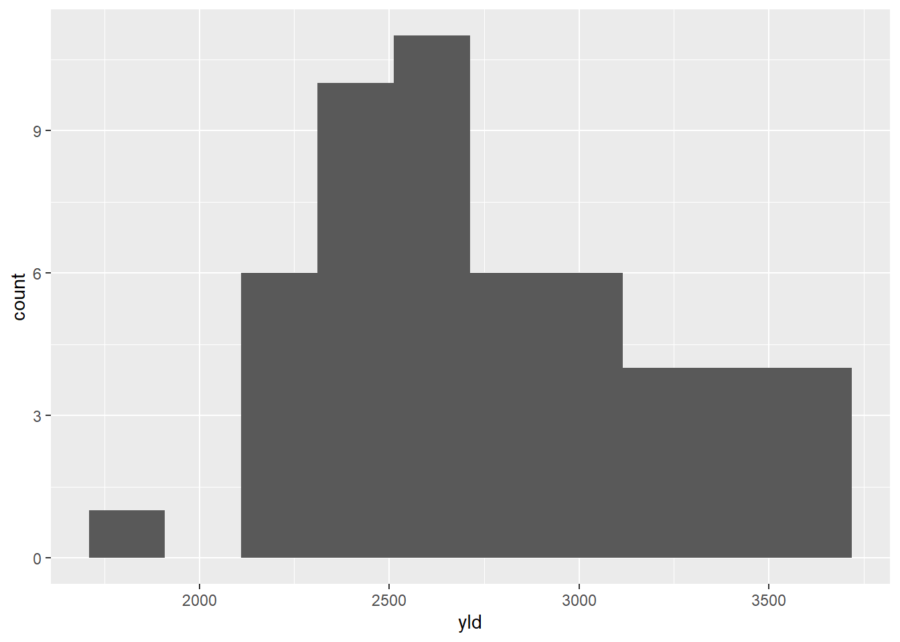

library(tidyverse)
library(readxl)
mofo <- read_excel("dados-diversos.xlsx", "mofo")Aula7
Transformação de dados
Como já é de conhecimento, o primeiro passo é carregar os pacotes necessários (tidyverse e readxl). Para a transformação de dados, será utilizado o conjunto de dados mofo, presente dentro do banco de dados da planilha dados-diversos.
Agora, vamos visualizar os dados de inc (incidencia) pelos tratamentos e pelo estudo (tratamento dentro de estudo). Então, o tratamento vai dentro do ggplot, enquanto o study vai dentro de facet. A função facet_wrap() replica o gráfico especificado para cada categoria de uma coluna.
mofo |>
ggplot(aes(treat, inc))+
facet_wrap(~study)+
geom_point()
Também pode usar a função geom_col para visualizar os dados de uma forma diferente.
Histograma
Agora, faremos um histograma para visualizar a incidência e outro para visualizar os dados de escleródio.
inc <- mofo |>
ggplot(aes(inc))+
geom_histogram()
#Para o scleródio
mofo |>
ggplot(aes(scl))+
geom_histogram()
Depois disso, montaremos um boxplot para visualizar os dados de scl.
scl <- mofo |>
ggplot(aes(scl))+
geom_boxplot()Agora, como já aprendido, juntaremos os 2 gráficos, para isso, devemos carregar o pacote patchwork:
library(patchwork)
inc + scl
Após isso, podemos encontrar a média dos dados. Para achar a média podemos usar as funções $, mean+conjunto ou summary.
mofo$scl [1] 2194 1663 1313 1177 753 1343 1519 516 643 400 643 921 1196 1331 756
[16] 338 581 588 231 925 119 394 206 275 131 588 5013 3619 2325 2588
[31] 3969 1556 3175 1763 2894 350 419 644 2850 6216 2888 2272 2868 2412 2372
[46] 3424 1744 1456 1732 1080 1592 3268mean(mofo$scl)[1] 1639.096Transformando os dados
Nós podemos transformar os dados de diferentes maneiras. Ex.: log e raiz quadrada. Para transformar os dados para o logaritimo dos números usa-se a função mutate e log (). Através da função mutate() realizamos a criação/adição de uma nova variável (ou novas variaveis), que são funções de variáveis existentes, e também criamos/modificamos colunas.
mofo2 <- mofo |>
mutate (scl2 = log(scl))
mofo2# A tibble: 52 × 6
study treat inc scl yld scl2
<dbl> <dbl> <dbl> <dbl> <dbl> <dbl>
1 1 1 76 2194 2265 7.69
2 1 2 53 1663 2618 7.42
3 1 3 42 1313 2554 7.18
4 1 4 37 1177 2632 7.07
5 1 5 29 753 2820 6.62
6 1 6 42 1343 2799 7.20
7 1 7 55 1519 2503 7.33
8 1 8 40 516 2967 6.25
9 1 9 26 643 2965 6.47
10 1 10 18 400 3088 5.99
# ℹ 42 more rowsAgora, podemos visualizar os dados tranformados em log por meio de um histograma, da mesma forma feita acima.
mofo2 |>
ggplot(aes(scl2))+
geom_histogram(bins = 10)
Para transformar os dados em raiz quadrada, usamos a função mutate e sqrt ().
mofo2 <- mofo |>
mutate (scl2 = sqrt(scl))
mofo2# A tibble: 52 × 6
study treat inc scl yld scl2
<dbl> <dbl> <dbl> <dbl> <dbl> <dbl>
1 1 1 76 2194 2265 46.8
2 1 2 53 1663 2618 40.8
3 1 3 42 1313 2554 36.2
4 1 4 37 1177 2632 34.3
5 1 5 29 753 2820 27.4
6 1 6 42 1343 2799 36.6
7 1 7 55 1519 2503 39.0
8 1 8 40 516 2967 22.7
9 1 9 26 643 2965 25.4
10 1 10 18 400 3088 20
# ℹ 42 more rows mofo2 |>
ggplot(aes(scl2))+
geom_histogram(bins = 10)
Agora, testaremos os dados da variável produtividade.
mofo2 |>
ggplot(aes(yld))+
geom_histogram(bins = 10)
Usando a função arrange
Faremos uso agora da função arrange com o conjunto de dados survey. A função arrange () é usada para ordenar linhas. Essa função ordena os dados por ordem crescente ou decrescente (depende se coloca o sinal de menos ou não dentro da função). O primeiro argumento é a base de dados, os demais argumentos são as colunas pelas quais queremos ordenar as linhas. A função slice mostra determinada linha pela posição dela, que você solicita. A função filter escolhe casos com base em seus valores. A função count conta o número de linhas com cada valor exclusivo de uma variável (com ou sem pesos). A função slice seleciona linhas por posição.
survey <- read_excel("dados-diversos.xlsx", "survey")
survey |>
filter(state == "RS") |>
count(species, residue) |>
arrange(n) |>
#slice(1) |>
rename(res = residue) |>
mutate(n_class = case_when(
n < 30 ~ "baixa",
TRUE ~ "Alta"))# A tibble: 4 × 4
species res n n_class
<chr> <chr> <int> <chr>
1 Fspp corn 22 baixa
2 Fspp soybean 26 baixa
3 Fgra corn 147 Alta
4 Fgra soybean 255 Alta